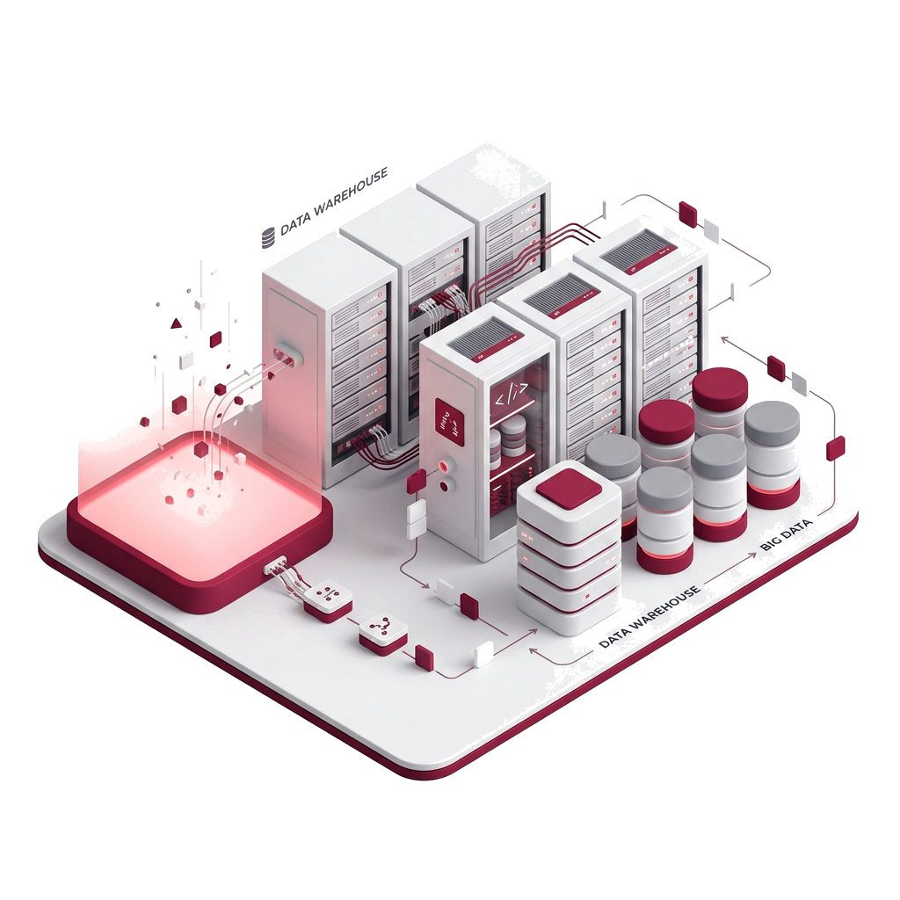
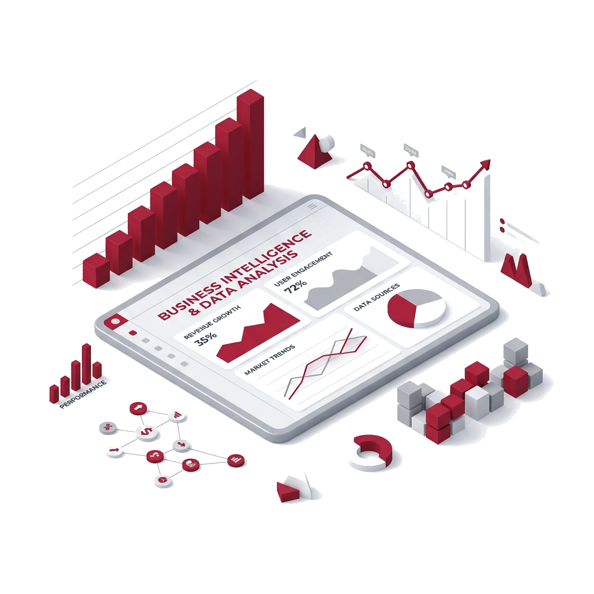
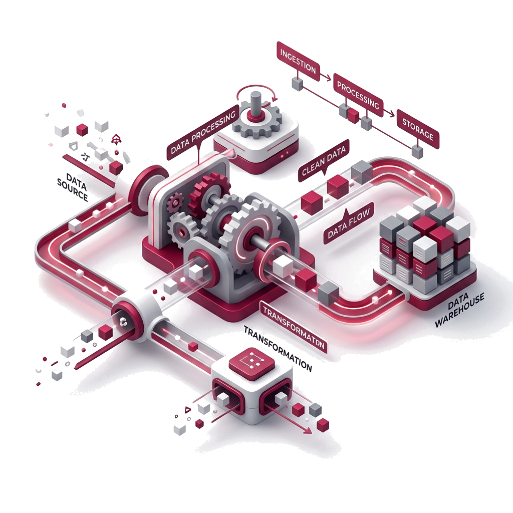
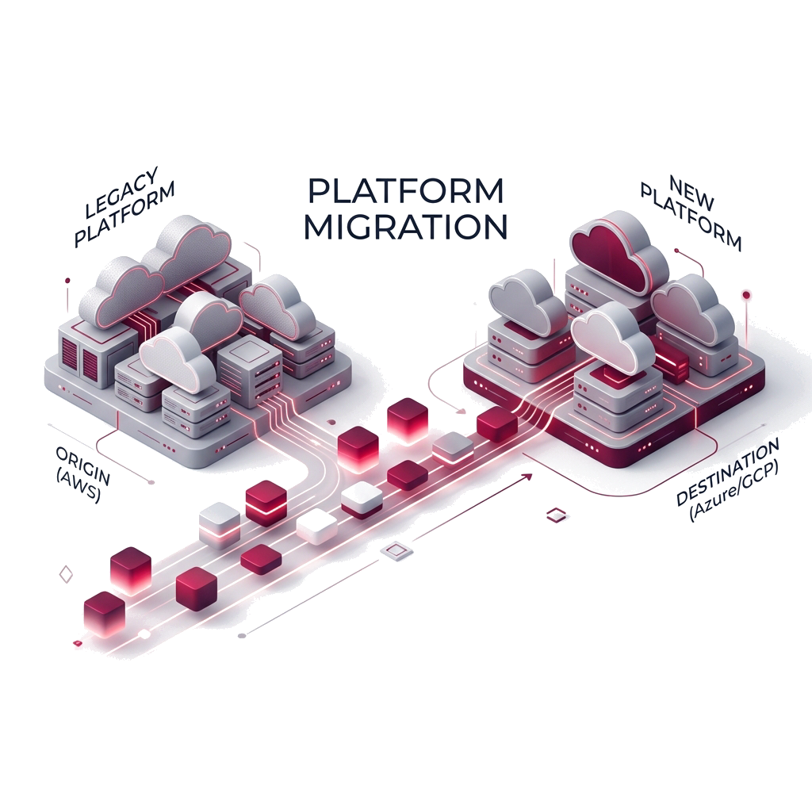
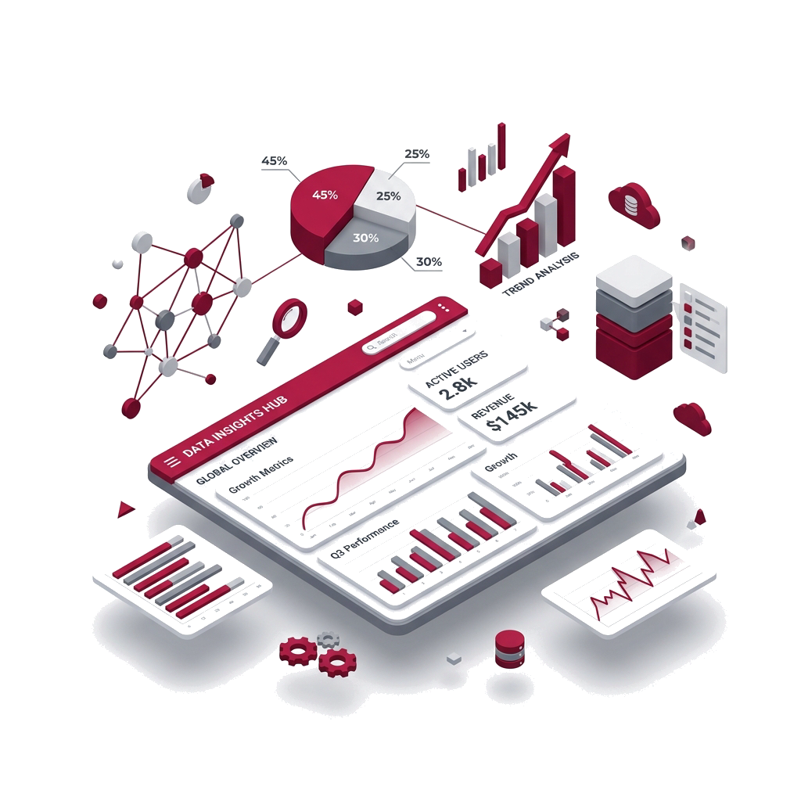
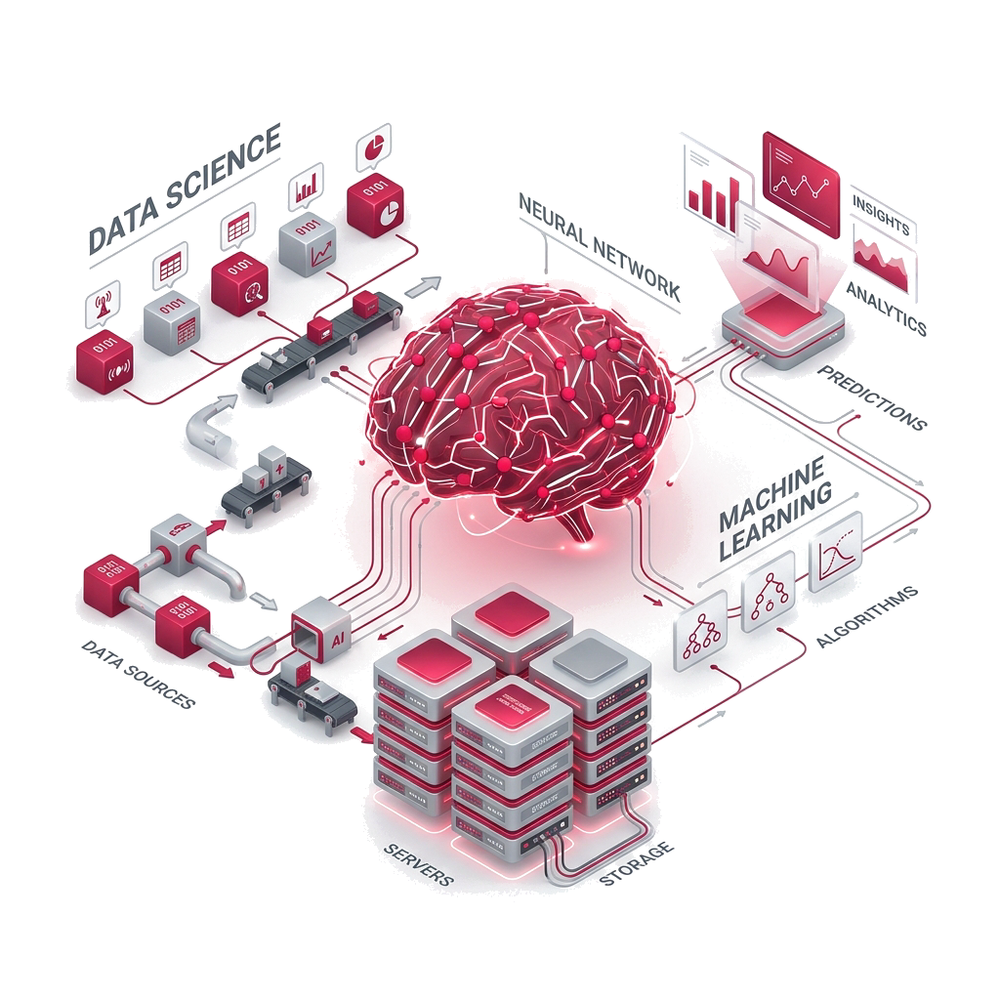

Data insights and analytics are becoming increasingly important in today's world, as businesses are generating more and more data. This data can be used to gain a competitive advantage, identify new opportunities, and improve customer service.
With intuitive dashboards that visualize KPIs in real time, automated ETL processes that streamline workflows and smart AI algorithms that anticipate customer requirements, modern data platforms offer unrivaled insight into business performance and long-term trends – empowering timely decisions backed by facts.

Pro17Analytics helps companies develop advanced analytics solutions such as predictive models, machine learning algorithms, artificial intelligence (AI) network architectures, or enterprise dashboards that offer granular engagement with large volumes of structured and unstructured datasets.

Accelerate innovation with world-class tech teams We'll match you to an entire remote team of incredible freelance talent for all your software development needs.

Pro17Analytics helps companies develop advanced analytics solutions such as predictive models, machine learning algorithms, artificial intelligence (AI) network architectures, or enterprise dashboards that offer granular engagement with large volumes of structured and unstructured datasets.
Pro17Analytics works closely with clients to understand their unique needs and develop customized solutions that fit their specific requirements. By focusing on data and analytics estate development, Pro17Analytics helps organizations to unlock the full potential of their data assets and gain a competitive edge in their industry.

Platform Migration in Pro17 Analytics is a strategy for businesses to move their existing applications and processes onto a more efficient, reliable, and secure platform.

Data visualization is an essential component of Pro17 Analytics, which is a data analysis and analytics company. Pro17 Analytics helps businesses get the most out of their data by providing insights and business intelligence through its data visualization services.

Data Science and Machine Learning are two of the most important technologies used in Pro 17 Analytics. Data Science is the field of study that uses data to understand patterns, trends, and relationships in data
Accelerate innovation with world-class tech teams We'll match you to an entire remote team of incredible freelance talent for all your software development needs.